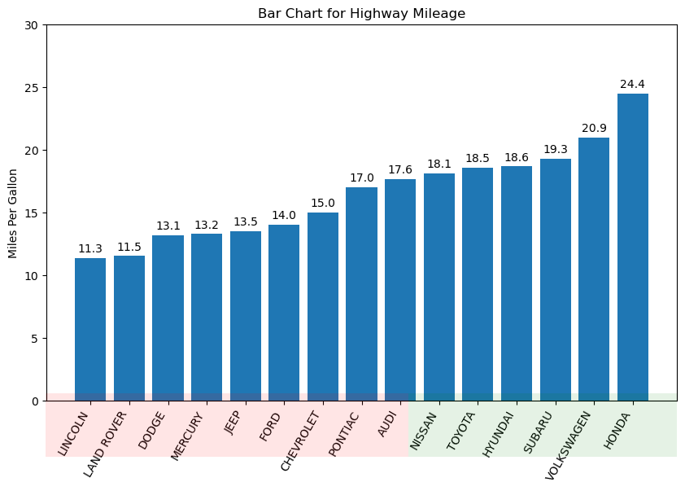
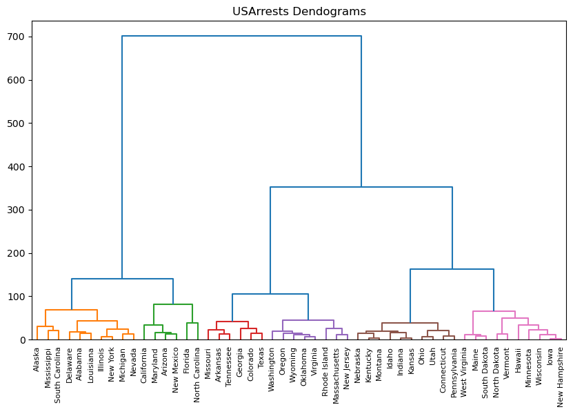
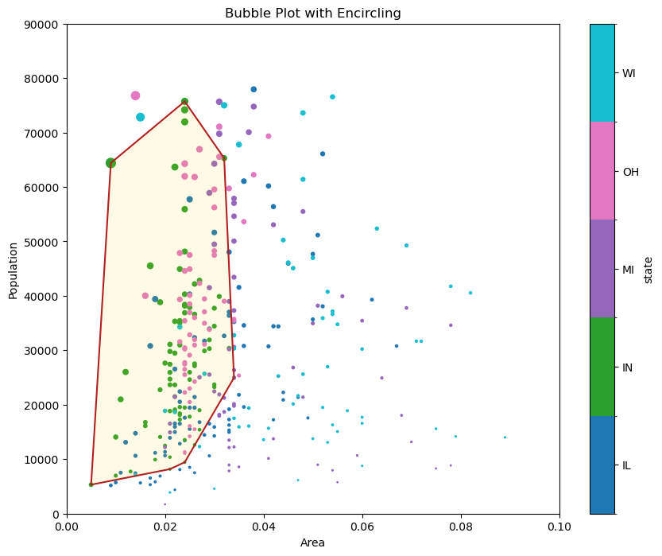
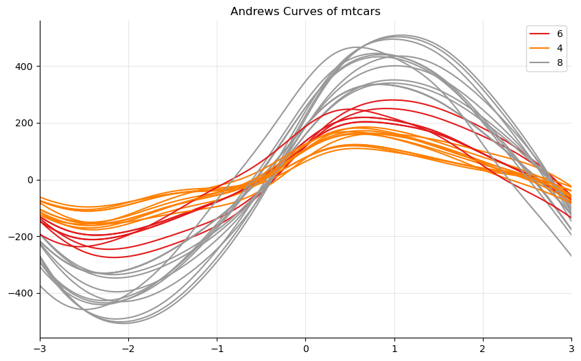
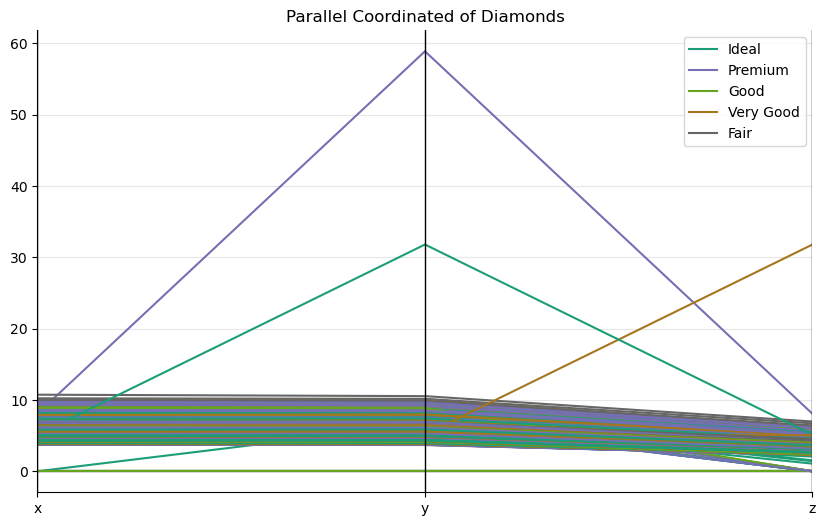

Group#
from matplotlib import patches
from scipy.spatial import ConvexHull
import matplotlib.pyplot as plt
import numpy as np
import pandas as pd
/var/folders/py/n14256yd5r5ddms88x9bvsv40000gn/T/ipykernel_54037/979438186.py:5: DeprecationWarning:
Pyarrow will become a required dependency of pandas in the next major release of pandas (pandas 3.0),
(to allow more performant data types, such as the Arrow string type, and better interoperability with other libraries)
but was not found to be installed on your system.
If this would cause problems for you,
please provide us feedback at https://github.com/pandas-dev/pandas/issues/54466
import pandas as pd
Bar#
mpg = pd.read_csv("data/mpg.csv")
mpg.head()
| manufacturer | model | displ | year | cyl | trans | drv | cty | hwy | fl | class | |
|---|---|---|---|---|---|---|---|---|---|---|---|
| 0 | audi | a4 | 1.8 | 1999 | 4 | auto(l5) | f | 18 | 29 | p | compact |
| 1 | audi | a4 | 1.8 | 1999 | 4 | manual(m5) | f | 21 | 29 | p | compact |
| 2 | audi | a4 | 2.0 | 2008 | 4 | manual(m6) | f | 20 | 31 | p | compact |
| 3 | audi | a4 | 2.0 | 2008 | 4 | auto(av) | f | 21 | 30 | p | compact |
| 4 | audi | a4 | 2.8 | 1999 | 6 | auto(l5) | f | 16 | 26 | p | compact |
mpg_group = (
mpg.loc[:, ["cty", "manufacturer"]].groupby("manufacturer").agg({"cty": np.mean})
)
mpg_group.sort_values("cty", inplace=True)
mpg_group.reset_index(inplace=True)
mpg_group.head()
/var/folders/py/n14256yd5r5ddms88x9bvsv40000gn/T/ipykernel_54037/1191042407.py:2: FutureWarning: The provided callable <function mean at 0x105d393a0> is currently using SeriesGroupBy.mean. In a future version of pandas, the provided callable will be used directly. To keep current behavior pass the string "mean" instead.
mpg.loc[:, ["cty", "manufacturer"]].groupby("manufacturer").agg({"cty": np.mean})
| manufacturer | cty | |
|---|---|---|
| 0 | lincoln | 11.333333 |
| 1 | land rover | 11.500000 |
| 2 | dodge | 13.135135 |
| 3 | mercury | 13.250000 |
| 4 | jeep | 13.500000 |
fig, ax = plt.subplots(figsize=(10, 6), facecolor="white")
x = mpg_group["manufacturer"].str.upper()
y = mpg_group["cty"]
ax.bar(x=x, height=y)
for i, cty in enumerate(y):
ax.text(i, cty + 0.5, round(cty, 1), horizontalalignment="center")
p1 = patches.Rectangle(
(0.57, -0.005),
width=0.33,
height=0.13,
alpha=0.1,
facecolor="green",
transform=fig.transFigure,
)
p2 = patches.Rectangle(
(0.124, -0.005),
width=0.446,
height=0.13,
alpha=0.1,
facecolor="red",
transform=fig.transFigure,
)
fig.add_artist(p1)
fig.add_artist(p2)
ax.set(ylim=(0, 30), ylabel="Miles Per Gallon", title="Bar Chart for Highway Mileage")
plt.setp(ax.get_xticklabels(), rotation=60, horizontalalignment="right")
plt.show()

Dendrogram#
from scipy.cluster import hierarchy
arrests = pd.read_csv("data/us_arrests.csv")
arrests.head()
| Murder | Assault | UrbanPop | Rape | State | |
|---|---|---|---|---|---|
| 0 | 13.2 | 236 | 58 | 21.2 | Alabama |
| 1 | 10.0 | 263 | 48 | 44.5 | Alaska |
| 2 | 8.1 | 294 | 80 | 31.0 | Arizona |
| 3 | 8.8 | 190 | 50 | 19.5 | Arkansas |
| 4 | 9.0 | 276 | 91 | 40.6 | California |
_, ax = plt.subplots(figsize=(10, 6))
dend = hierarchy.dendrogram(
hierarchy.linkage(
arrests[["Murder", "Assault", "UrbanPop", "Rape"]], method="ward"
),
labels=arrests.State.array,
color_threshold=100,
)
ax.set(title="USArrests Dendograms")
plt.show()

Encircling#
midwest = pd.read_csv("data/midwest_filter.csv")
midwest["popdensity"] = midwest["popdensity"] / 100
midwest["state"] = midwest["state"].astype("category")
midwest.head()
| PID | county | state | area | poptotal | popdensity | popwhite | popblack | popamerindian | popasian | ... | percprof | poppovertyknown | percpovertyknown | percbelowpoverty | percchildbelowpovert | percadultpoverty | percelderlypoverty | inmetro | category | dot_size | |
|---|---|---|---|---|---|---|---|---|---|---|---|---|---|---|---|---|---|---|---|---|---|
| 0 | 561 | ADAMS | IL | 0.052 | 66090 | 12.709615 | 63917 | 1702 | 98 | 249 | ... | 4.355859 | 63628 | 96.274777 | 13.151443 | 18.011717 | 11.009776 | 12.443812 | 0 | AAR | 250.944411 |
| 1 | 562 | ALEXANDER | IL | 0.014 | 10626 | 7.590000 | 7054 | 3496 | 19 | 48 | ... | 2.870315 | 10529 | 99.087145 | 32.244278 | 45.826514 | 27.385647 | 25.228976 | 0 | LHR | 185.781260 |
| 2 | 563 | BOND | IL | 0.022 | 14991 | 6.814091 | 14477 | 429 | 35 | 16 | ... | 4.488572 | 14235 | 94.956974 | 12.068844 | 14.036061 | 10.852090 | 12.697410 | 0 | AAR | 175.905385 |
| 3 | 564 | BOONE | IL | 0.017 | 30806 | 18.121177 | 29344 | 127 | 46 | 150 | ... | 4.197800 | 30337 | 98.477569 | 7.209019 | 11.179536 | 5.536013 | 6.217047 | 1 | ALU | 319.823487 |
| 4 | 565 | BROWN | IL | 0.018 | 5836 | 3.242222 | 5264 | 547 | 14 | 5 | ... | 3.367680 | 4815 | 82.505140 | 13.520249 | 13.022889 | 11.143211 | 19.200000 | 0 | AAR | 130.442161 |
5 rows × 29 columns
midwest_select = midwest.query("state=='IN'")
midwest_select.head()
| PID | county | state | area | poptotal | popdensity | popwhite | popblack | popamerindian | popasian | ... | percprof | poppovertyknown | percpovertyknown | percbelowpoverty | percchildbelowpovert | percadultpoverty | percelderlypoverty | inmetro | category | dot_size | |
|---|---|---|---|---|---|---|---|---|---|---|---|---|---|---|---|---|---|---|---|---|---|
| 83 | 663 | ADAMS | IN | 0.021 | 31095 | 14.807143 | 30530 | 36 | 42 | 60 | ... | 4.862299 | 30490 | 98.054350 | 11.636602 | 17.194524 | 9.101888 | 8.714027 | 1 | AAU | 277.642023 |
| 84 | 665 | BARTHOLOMEW | IN | 0.022 | 63657 | 28.935000 | 61774 | 1005 | 97 | 610 | ... | 6.844097 | 62784 | 98.628588 | 8.545171 | 10.736855 | 6.992420 | 10.811943 | 0 | AAR | 457.463283 |
| 85 | 666 | BENTON | IN | 0.024 | 9441 | 3.933750 | 9389 | 6 | 16 | 1 | ... | 4.014538 | 9300 | 98.506514 | 8.043011 | 8.349218 | 6.842329 | 10.502283 | 0 | AAR | 139.244020 |
| 86 | 667 | BLACKFORD | IN | 0.010 | 14067 | 14.067000 | 13978 | 7 | 44 | 16 | ... | 4.428124 | 13903 | 98.834151 | 9.853988 | 12.323745 | 8.332247 | 10.937500 | 0 | AAR | 268.221385 |
| 87 | 668 | BOONE | IN | 0.024 | 38147 | 15.894583 | 37814 | 83 | 90 | 94 | ... | 8.813967 | 37402 | 98.047029 | 6.296455 | 8.021754 | 5.239599 | 7.089425 | 1 | HLU | 291.483110 |
5 rows × 29 columns
_, ax = plt.subplots(figsize=(10, 8))
midwest.plot.scatter(
x="area", y="poptotal", c="state", s="popdensity", cmap="tab10", ax=ax
)
# Encircling
def encircle(x, y, ax=None, **kw) -> None:
ax = ax or plt.gca()
p = np.stack([x, y], axis=1)
hull = ConvexHull(p)
poly = patches.Polygon(xy=p[hull.vertices, :], closed=True, **kw)
ax.add_patch(poly)
ax.set(
xlim=(0.0, 0.1),
ylim=(0, 90000),
xlabel="Area",
ylabel="Population",
title="Bubble Plot with Encircling",
)
x = midwest_select["area"]
y = midwest_select["poptotal"]
# Draw polygon surrounding vertices
encircle(x, y, ec="k", fc="gold", alpha=0.1, ax=ax)
encircle(x, y, ec="firebrick", fc="none", lw=1.5, ax=ax)
plt.show()

Andrews Curve#
from pandas.plotting import andrews_curves
mtcars = pd.read_csv("data/mtcars.csv")
mtcars.head()
| mpg | cyl | disp | hp | drat | wt | qsec | vs | am | gear | carb | fast | cars | |
|---|---|---|---|---|---|---|---|---|---|---|---|---|---|
| 0 | 4.582576 | 6 | 160.0 | 110 | 3.90 | 2.620 | 16.46 | 0 | 1 | 4 | 4 | 1 | Mazda RX4 |
| 1 | 4.582576 | 6 | 160.0 | 110 | 3.90 | 2.875 | 17.02 | 0 | 1 | 4 | 4 | 1 | Mazda RX4 Wag |
| 2 | 4.774935 | 4 | 108.0 | 93 | 3.85 | 2.320 | 18.61 | 1 | 1 | 4 | 1 | 1 | Datsun 710 |
| 3 | 4.626013 | 6 | 258.0 | 110 | 3.08 | 3.215 | 19.44 | 1 | 0 | 3 | 1 | 1 | Hornet 4 Drive |
| 4 | 4.324350 | 8 | 360.0 | 175 | 3.15 | 3.440 | 17.02 | 0 | 0 | 3 | 2 | 1 | Hornet Sportabout |
mtcars.drop(["cars"], axis=1, inplace=True)
_, ax = plt.subplots(figsize=(10, 6))
andrews_curves(mtcars, "cyl", colormap="Set1")
ax.spines[["top", "right"]].set_visible(False)
ax.set(title="Andrews Curves of mtcars", xlim=(-3, 3))
ax.grid(alpha=0.3)
plt.show()

Parallel Coordinates#
from pandas.plotting import parallel_coordinates
diamonds = pd.read_csv("data/diamonds.csv")
diamonds.head()
| carat | cut | color | clarity | depth | table | price | x | y | z | |
|---|---|---|---|---|---|---|---|---|---|---|
| 0 | 0.23 | Ideal | E | SI2 | 61.5 | 55.0 | 326 | 3.95 | 3.98 | 2.43 |
| 1 | 0.21 | Premium | E | SI1 | 59.8 | 61.0 | 326 | 3.89 | 3.84 | 2.31 |
| 2 | 0.23 | Good | E | VS1 | 56.9 | 65.0 | 327 | 4.05 | 4.07 | 2.31 |
| 3 | 0.29 | Premium | I | VS2 | 62.4 | 58.0 | 334 | 4.20 | 4.23 | 2.63 |
| 4 | 0.31 | Good | J | SI2 | 63.3 | 58.0 | 335 | 4.34 | 4.35 | 2.75 |
_, ax = plt.subplots(figsize=(10, 6))
parallel_coordinates(
frame=diamonds.loc[:, ["cut", "x", "y", "z"]],
class_column="cut",
colormap="Dark2",
ax=ax,
)
ax.spines[["top", "right"]].set_visible(False)
ax.set(title="Parallel Coordinated of Diamonds")
ax.grid(alpha=0.3)
plt.show()
